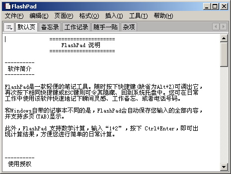
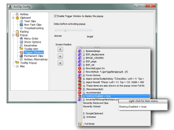
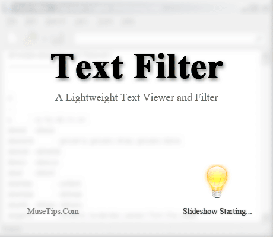
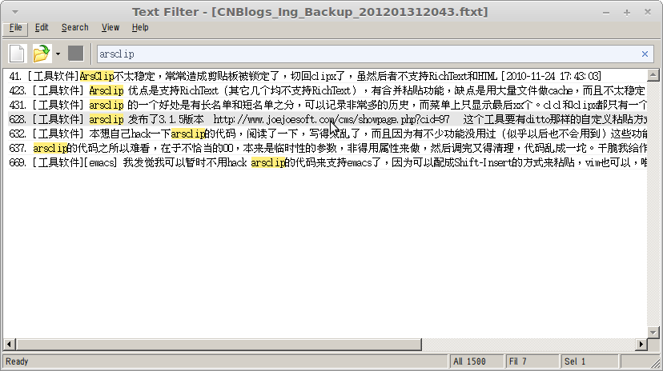

Created 星期日 24 六月 2012
@工具软件
介绍几个Windows下的小工具
随手记： FlashPad
http://www.haoxg.net/tools.html#flashpad
作者的介绍:
我觉得这个工具是我一直在找的：它满足的是“随手记”这个场景，你可以随手记录些杂七杂八的内容，多条记录简单地通过”---”分隔，多标签页可以用来能简单地分个类。自动保存，启动时自动加载，不会用“要不要保存”这类问题来烦你。
我试用过其它一些工具，都不太能满足这个简单的场景：而CintaNotes得一条条地记录，适合记录一些“有所得”的内容，还得分开填标题、链接、Tag什么的，用在这里太拘谨了; minipad2每条记录都需要独立编辑，调整内容不太方便; BooguNote操作太麻烦了，点来点去我还不如用org-mode; 而ATnotes/TurboNotes等桌面贴的编辑功能又比较差。
flashpad screenshot

剪贴板历史管理： ArsClip
http://www.joejoesoft.com/vcms/97/
剪贴板历史管理工具有很多，比如善用佳软推荐的CLCL、ClipX都是不错的选择（详情参见: CLCL和ClipX:最实用的剪贴板增强工具,免费超小_善用佳软_新浪博客 和 剪贴板增强软件综述:CLCL,ClipX,Ditto等（更新ArsClip） 这两篇）。
不过我有一个比较特殊一点的需求：要求保留的历史记录比较多。虽然大多数这类软件对于记录多少条历史，都是可以配置的，但它们都很少为这种情况下做过特殊考虑：CLCL和ClipX都只是根据数量的增大而将菜单撑得很长很长，让人很难去选择，其实只需要列出最近的10来条记录，再老的记录就可以用个二级菜单、列表框之类的就可以了。另外，记录数一多，一条条让人眼去挑是很累的，所以能提供一个搜索功能是最好的（而且应该是增量式搜索）。——满足这个要求的，就只有ArsClip和Ditto这两个工具了。

善用佳软选择Ditto作为首选（Ditto:首选的剪贴板增强软件 )，但用了一阵，喜欢不起来，主要是功能太多了，设置界面太复杂了，让人头晕。于是选择了ArsClip。
BTW: 除Ctrl-V之外的粘贴方式： 因为我使用vim/emacs/命令行这类程序比较多，Firefox也用keysnail配成了emacs的参见风格，它们都不是用Ctrl-V来粘贴，所以Ditto可以针对不同程序自定义粘贴方式(参见: Ditto官方说明 善用佳软的介绍) 这一点很吸引我，先让我犹豫了好一阵要不要切换到Ditto，后来我又去拿了ArsClip的代码来改（是的，虽然不是开源软件，但作者提供了源代码哦）——最后发现ArsClip提供了Shift+Insert、Mimic Typing、Clipboard Only这三种方式备选，也可以针对每个程序进行设置（见上图），基本上够用了。
参考： ArsClip：超強圖文剪貼簿
MuseTips Text Filter
这个工具也很简单，就是在打开一个文本文件，随着你的输入过滤出包含这些关键字的行。看下面这个gif就明白啦:
textfilter demo

由于Emacs里有这样的扩展(EmacsWiki: HideSearch)，我正经编辑文件时都用Emacs。所以单独使用这个小工具的场合，主要就一个——搜索我在博客园的闪存: 我用闪存记录一些零星的心得、想法、问题、待办，然后差不多每月一次将闪存导出为文件，还用AutoIt写了段小脚本来调用TextFilter打开最新的闪存离线文件。我写这篇文章就用这个工具多次查询了以前记录的相关闪存（见下图）。

{kind=link}
{kind=link}
{kind=link}
{kind=link}